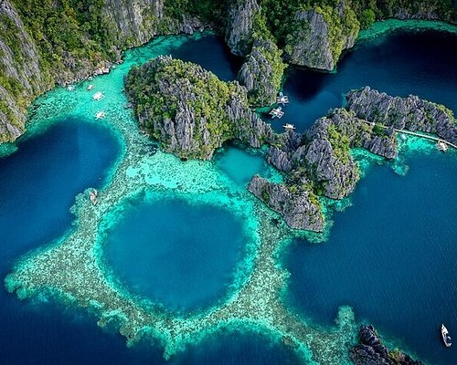
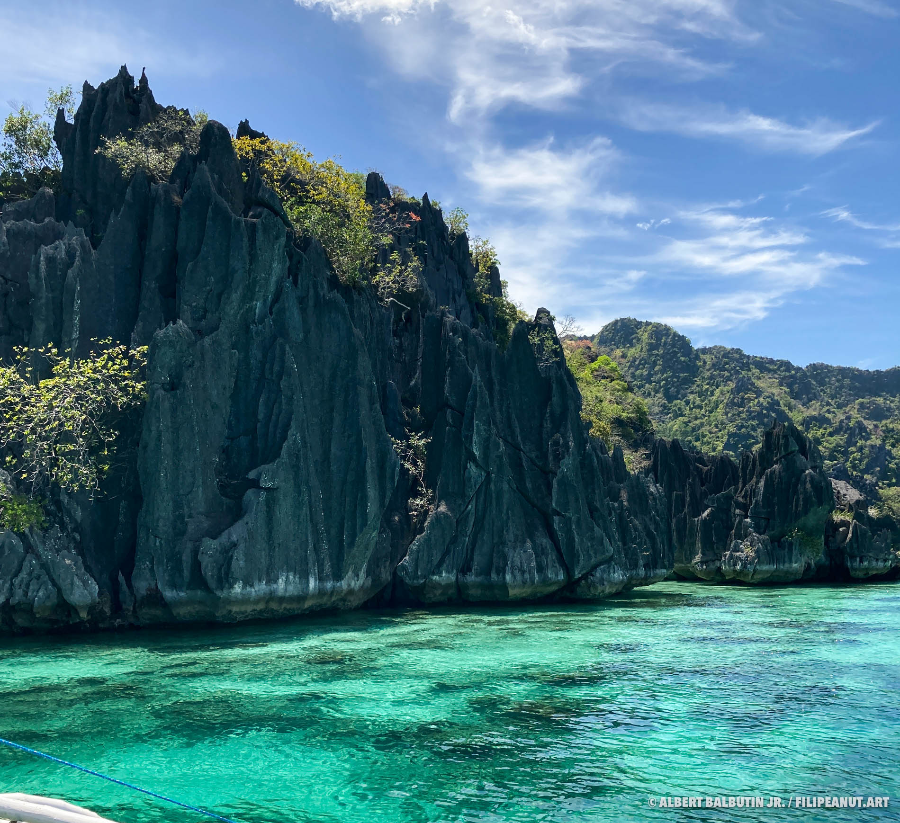

Coron, Palawan
Coron, located in the northern part of Palawan, is one of the most breathtaking destinations in the Philippines. It is famous for its stunning natural landscapes, including towering karst formations, turquoise lakes, white-sand beaches, and vibrant coral reefs.


Visitors to Coron, Palawan can enjoy island hopping to stunning spots like Kayangan Lake and Twin Lagoon, go snorkeling and scuba diving to explore vibrant coral reefs and World War II shipwrecks, hike up Mount Tapyas for breathtaking views, relax in Maquinit Hot Springs, and unwind on beautiful white-sand beaches nearby.